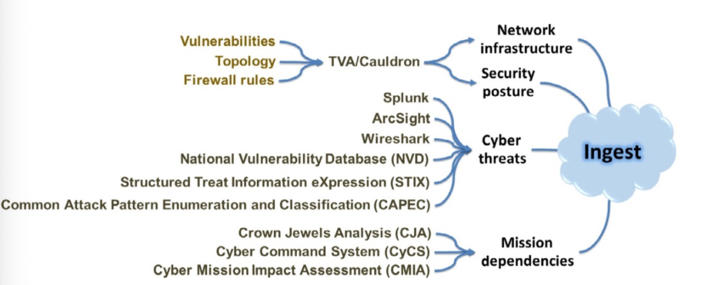
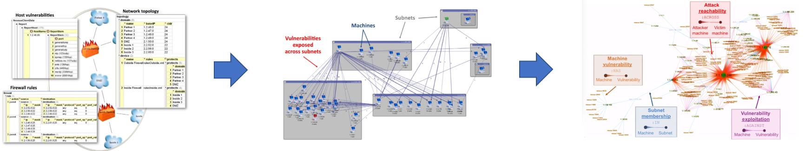
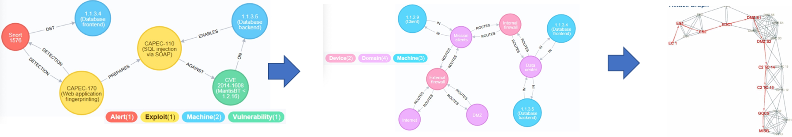

面向网络空间关键地形识别的知识获取与利用技术
-
date_range 29/06/2019 00:00 infosortSAlabel
面向网络空间关键地形识别的知识获取与利用技术
一、问题描述
网络空间态势感知的基础环节为知识的应用，但是，网络空间知识数据分布广泛，为了综合利用网络空间中已有的知识，主要面临如下三个问题：
具体的知识抽取任务主要包括如下四个方面：
（1）知识的数据来源
网络空间知识的数据来源有哪些？
（2）知识来源数据采集
如何采集网络空间关键地形相关的数据。
（3）知识的利用
如何利用已有的知识来预测、推理新的知识？比如根据已有的漏洞模式来预测软件服务的脆弱性？
二、主要研究内容
（1）面向网络空间关键地形识别的数据采集技术
可采集的数据如下图所示

（2）基于知识的网络脆弱节点拓扑还原
思想：综合考虑网络拓、主机脆弱性知识、防火墙规则等知识发现网络中的脆弱节点，具体技术路线如下图所示

（3）基于攻击模式、漏洞、异常知识的关联分析
思想：关联攻击模式库CAPEC、漏洞知识CVE、异常知识snort等，发现关键地形的攻击路径，具体的技术路线如下图所示。

三、研究资源
- cygraph https://neo4j.com/blog/cygraph-cybersecurity-situational-awareness/